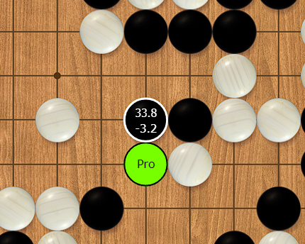
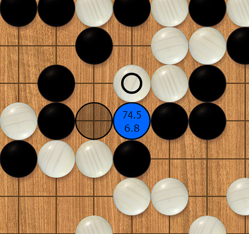

Realistic Go problems
When we think of Go problems, we think of tsumego. Small groups of stones in a corner that we need to either kill or keep alive. Tsumego train that very important skill, but Go is about more than life and death.
With realistic problems, we explore all of it. We are challenged to find urgent moves, make good shape, tenuki when we can, play the right joseki, make the vital move in big fights, and much more. And we get instant feedback,
which helps us train these skills efficiently.
Generated from pro games by AI
The problems are generated by AI and curated by a human player. The AI analyzes many positions from pro games and finds moments where there is only one correct move. The user is challenged to find this move.
Sometimes the pro played a different move than the AI, in which case both moves are considered correct answers to the problem.
There are currently
667 problems in the set.
It's possible that the AI didn't have enough time to correctly judge a position. If you believe a solution is wrong or a different move also works, please report it in the discord.
Ratings
The ratings should roughly translate to the numeric ratings on OGS. This means that a rating of 1400 should be around 10 kyu, 1700 around 4 kyu, 2000 around 1 dan, etcetera. All problems have ratings in the same range
and they change along with the players' ratings, which means users are essentially playing against the problems. The more a problem is attempted, the more accurate its rating will be. The initial ratings were assigned somewhat inaccurately
by a human player, so it's expected that many problems are harder or easier than their ratings suggest until the ratings have settled.
Gameplay
Each problem is presented to the user as a whole board position with black to play. It's possible to replay the game up to that point. If the user finds the AI move, the stone is placed on the board and within it will be the win
rate (top) and the score lead (bottom) according to KataGo at the time of problem creation. No live analysis is done. If the pro played elsewhere, their move is marked in green:

If the user gets it wrong, the AI move is shown in blue:

Roadmap
- Ability to play moves after the solution is shown
- A way to view the rating progression of users and problems
- Trophy case: The highest rated problems you have solved
- Leaderboards (for users as well as problems)
- Enabling users to rate the quality of problems
- Adding discussion features so users can comment on the problems
- Enabling users to add variations which can be shown with the solution and replayed by other users
Credits & license
This website makes heavy use of the excellent library
WGo by Jan Prokop.
The problems were generated using
lightvector/KataGo.
All code on this website is licensed under the
MIT license.
Created by Mart Broekkamp
martbr90@gmail.com